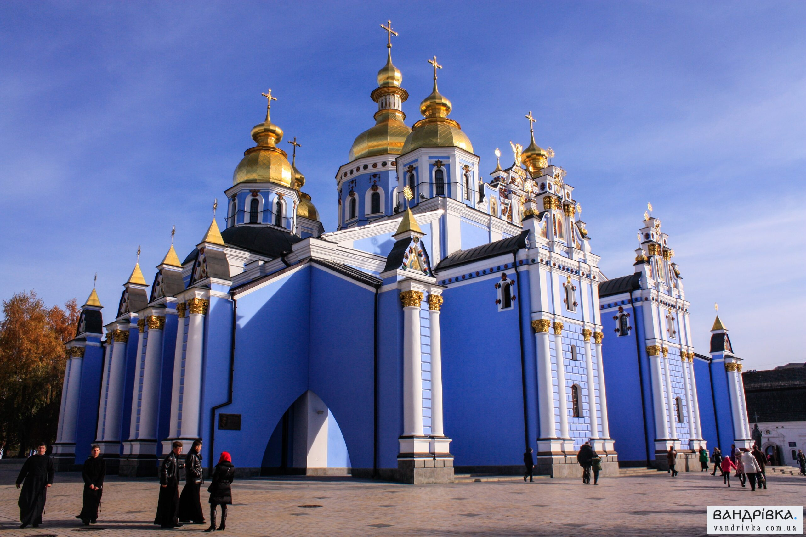

Ласкаво просимо до Києва!
Київ - столиця та найбільше місто України.
Київ є важливим культурним, економічним, науковим та освітнім центром Східної Європи.
Історія
Київ має багату історію, що налічує понад 1400 років. Місто було центром Київської Русі - першої східнослов'янської держави.
Українська революція
(17) березня — в Києві створена Українська Центральна Рада (УЦР) — представницький орган політичних і громадських організацій міста на чолі з істориком Михайлом Грушевським. 19 березня (1 квітня) — в Києві пройшла 100-тисячна українська маніфестація, на якій було висунуто вимогу національно-територіальної автономії для України. березень — створені Київська рада робітничих депутатів і Київська рада солдатських депутатів, що на заклик Леніна почали утворювати збройні формування бойовиків — Червону гвардію. 6 (19) квітня — 8 (21) квітня — в Києві відбувся Всеукраїнський національний конгрес, на якому Центральна рада була перетворена на головний представницький орган України і стала виконувати функції тимчасового українського парламенту. 26 жовтня (8 листопада) — більшовики спробували захопити владу в Києві. В ході боїв між ними та прихильниками Тимчасового уряду Росії, Українська Центральна Рада встановила свій контроль над містом. 7 (20) листопада — Київ стає столицею автономної Української Народної Республіки (УНР) в складі Російської держави згідно з ІІІ Універсалом Центральної Ради. 30 листопада (12 грудня) — невдала спроба повалення Української Центральної Ради в Києві силами Київського військово-революційного комітету більшовиків. 1918
Пам'ятки
Київ відомий своїми пам'ятками, такими як Софійський собор, Києво-Печерська лавра, Золоті ворота та багато інших.
Один з найстаріших храмів України (XI століття). На території Лаври розташовані собори, храми, галерея, музеї, печери з мощами святих. Побачити все це і навіть більше ви встигнете під час оглядовій екскурсії “Київ за 180 хвилин”.